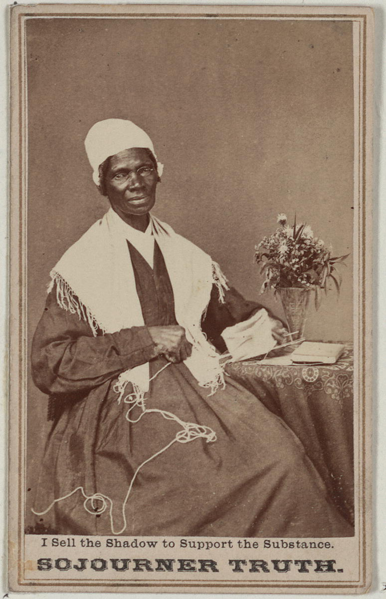

AI and Voice
Table of Contents
–
Overview
In this module, …
The “Ain’t I A Woman”? Problem
Part One: Analysis and Inference
In this first part of the activity, we will explore the powerful connection between a text and its author.

Image: Sojourner Truth. I Sell the Shadow to Support the Substance. 1864. The Alfred Whital Stern Collection of Lincolniana. Library of Congress Rare Book And Special Collections Division. Public domain image.
Watch this video, Sojourner Truth’s “Ain’t I a Woman” Performed by Kerry Washington, from ZinnEdProject. You can follow along with the text below.
Sojourner Truth (1797-1883): Ain’t I A Woman?
Delivered 1851, Women’s Rights Convention, Old Stone Church (since demolished), Akron, Ohio
Well, children, where there is so much racket there must be something out of kilter. I think that ’twixt the negroes of the South and the women at the North, all talking about rights, the white men will be in a fix pretty soon. But what’s all this here talking about?
That man over there says that women need to be helped into carriages, and lifted over ditches, and to have the best place everywhere. Nobody ever helps me into carriages, or over mud-puddles, or gives me any best place! And ain’t I a woman? Look at me! Look at my arm! I have ploughed and planted, and gathered into barns, and no man could head me! And ain’t I a woman? I could work as much and eat as much as a man - when I could get it - and bear the lash as well! And ain’t I a woman? I have borne thirteen children, and seen most all sold off to slavery, and when I cried out with my mother’s grief, none but Jesus heard me! And ain’t I a woman?
Then they talk about this thing in the head; what’s this they call it? [member of audience whispers, “intellect”] That’s it, honey. What’s that got to do with women’s rights or negroes’ rights? If my cup won’t hold but a pint, and yours holds a quart, wouldn’t you be mean not to let me have my little half measure full?
Then that little man in black there, he says women can’t have as much rights as men, ’cause Christ wasn’t a woman! Where did your Christ come from? Where did your Christ come from? From God and a woman! Man had nothing to do with Him.
If the first woman God ever made was strong enough to turn the world upside down all alone, these women together ought to be able to turn it back , and get it right side up again! And now they is asking to do it, the men better let them.
Obliged to you for hearing me, and now old Sojourner ain’t got nothing more to say.
Adapted from Sojourner Truth: Ain’t I A Woman?, Women’s Rights National Historical Park, National Park Service. Public domain text.
Instructor Notes
Instructor Notes
Implementation Guidance
This module is designed to be adapted for use in your institution’s Learning Management System (LMS). Because the primary publication format for this OER is HTML, the formatted text of each section of this module can be copied and pasted directly into your LMS and edited to fit your course context.
The recommended approach is to create a dedicated module or unit in your LMS for the Argumentative Essay and Presentation project, then build out individual discussion boards and assignment submission dropboxes for each step of the project.
When adapting this material, you will likely need to:
- Replace or remove any institution-specific links
- Adjust point values and due dates to fit your course schedule
- Update institution-specific resources such as writing center links or citation style guides
For guidance on creating discussions and assignments in your LMS, consult the official documentation for your platform:
- Canvas: How do I create a discussion as an instructor? | How do I create an assignment?
- Blackboard Ultra: Create Discussions | Create and Edit Assignments
- Moodle: Forum activity | Assignment activity
Attribution
This chapter is licensed under CC BY 4.0, which means you are free to use and modify these materials at no cost and without permission required as long as you provide attribution. If you adapt and use these materials, please include the following acknowledgment in your course:
Price, B. (2026). Argumentative Essay Project. In Authorship & AI: Modular OER for Responsible Academic Writing with Generative Tools. University of Pittsburgh. https://billcprice3.github.io/authorship-and-ai/020-argumentative-essay-project.html
License: This chapter is licensed under CC BY 4.0.
Cite this chapter as: Price, B. (2026). Argumentative Essay Project. In Authorship & AI: Modular OER for Responsible Academic Writing with Generative Tools. University of Pittsburgh. https://billcprice3.github.io/authorship-and-ai/010-your-writing-software-stack.html